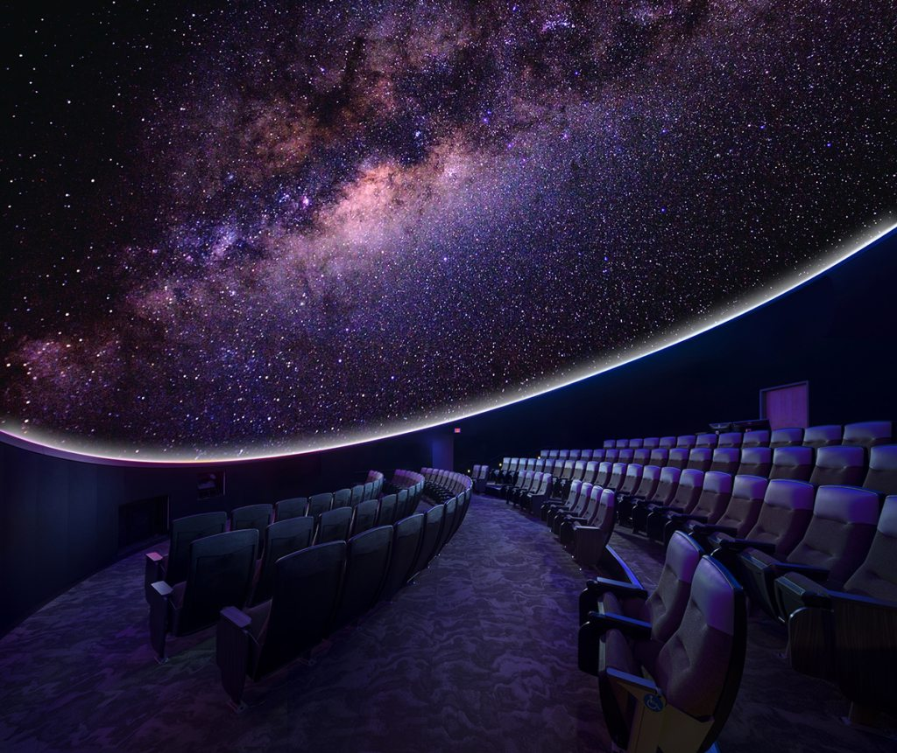
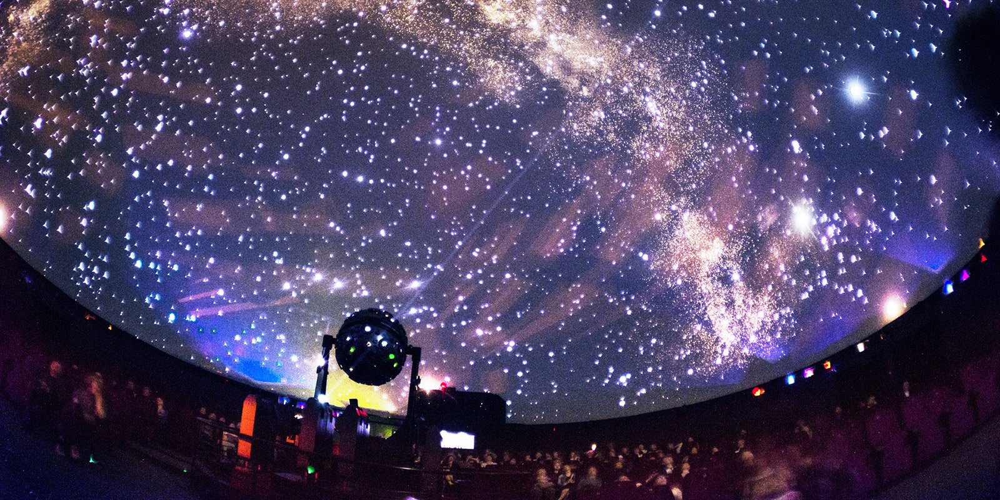
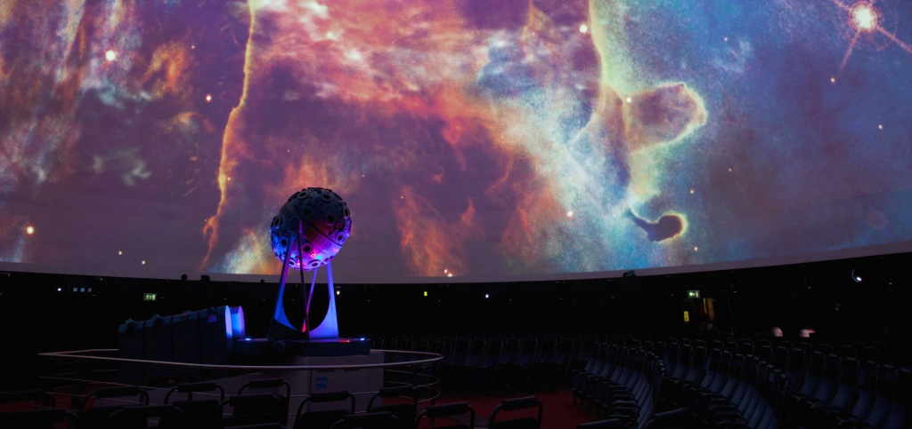

О планетарии
Планетарий — научно-просветительное учреждение, в котором демонстрируется небесная сфера со звёздами, планетами и спутниками, кометами и метеорами; также солнечные и лунные затмения, панорамы Луны, Марса, Венеры и климатических поясов земного шара. Демонстрация в планетариях выполняется с помощью специального прибора «Планетарий». Всего в нашем планетарии 3 зала с разной тематикой.
Залы
Фотографии планетария
- 
- 
- 